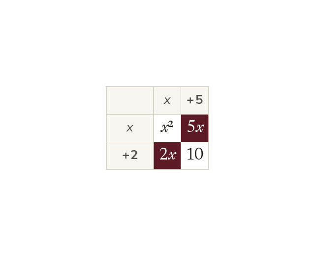

Factorise, then use the zero
A quadratic equal to zero is factorised first. Each bracket then gives one solution.
A quadratic equal to zero is factorised into two brackets first. Each bracket is then set to zero, giving the two solutions.